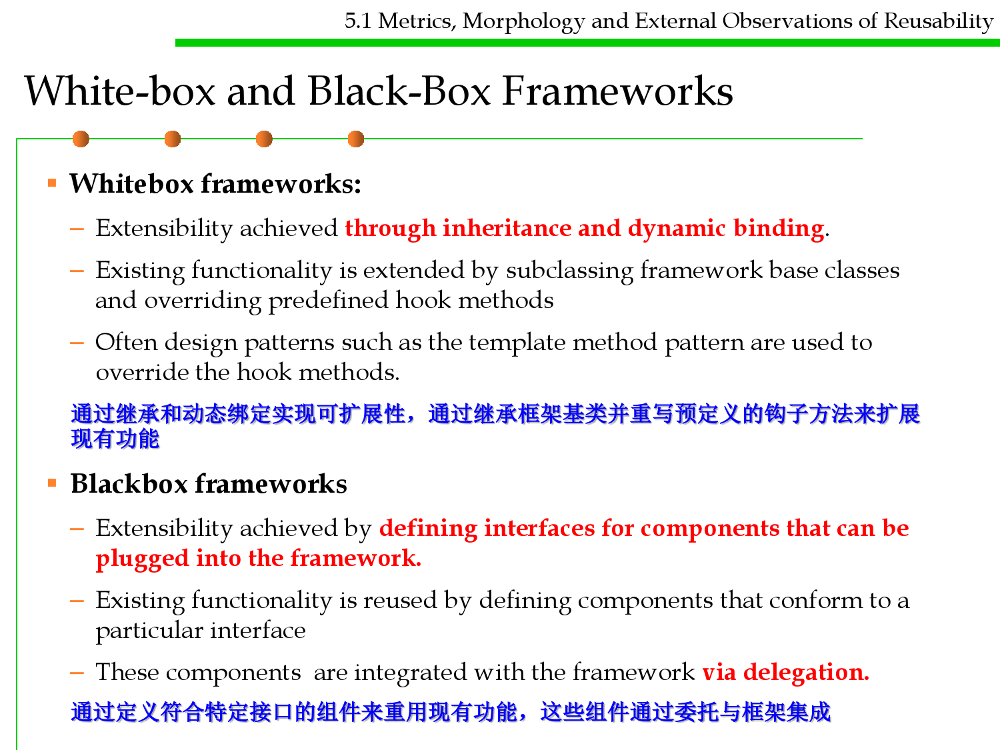
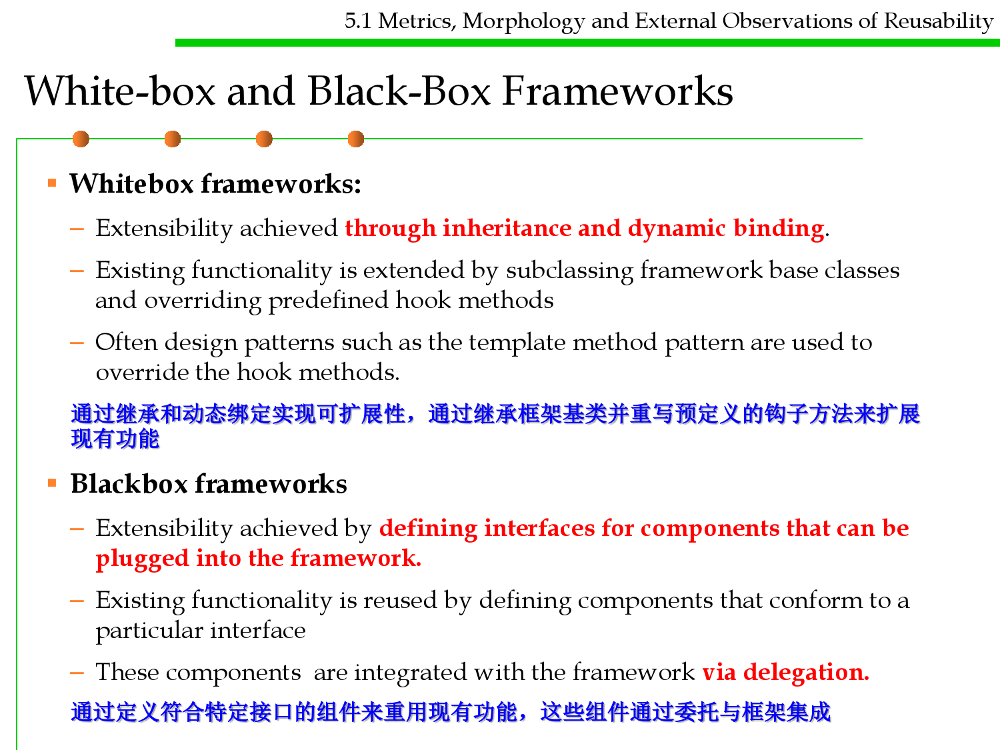

微信公众号[深容Pubmed文献检索] 1. 此处右键：选菜单【翻成中文（简体）】 2. 翻译后，此处右键：选菜单【打印...】成PDF格式
建议屏幕分辨率：1920X1080；如果屏幕太小，可以按Ctrl + 或 Ctrl -缩放网页。

Software Construction
Chapter 5: Reusability-Oriented Software
Construction Approaches
5.1 Metrics, Morphology and
External Observations of Reusability
Xu Hanchuan
xhc@hit.edu.cn
April 7, 2019

Outline
5.1 Metrics, Morphology and External Observations of Reusability
▪ What is software reuse?
▪ How to measure “reusability”?
▪ Levels and morphology of reusable components
– Source code level reuse
– Module-level reuse: class/interface
– Library-level: API/package
– System-level reuse: framework
▪ External observations of reusability
– Type Variation
– Routine Grouping
– Implementation Variation
– Representation Independence
– Factoring Out Common Behaviors
▪ Summary

5.1 Metrics, Morphology and External Observations of Reusability
Objective of this lecture
▪ To discuss the advantages and disadvantages of software reuse
▪ To describe construction for reuse
▪ To discuss the characteristics of generic reusable components
▪ To describe methods of developing portable application systems

Software Construction
1 What is Software Reuse?

5.1 Metrics, Morphology and External Observations of Reusability
Software reuse 软件复用/重用
▪ Software reuse is the process of implementing or updating
software systems using existing software components.
▪ Two perspectives of software reuse
– Creation: creating reusable resources in a systematic way (programming
for reuse) 为了复用编程
– Use: reusing resources as building blocks for creating new systems
(programming with reuse) 基于复用编程
▪ Why reuse?
– “The drive to create reusable rather than transitory artifacts has aesthetic
and intellectual as well as economic motivations and is part of man’s
desire for immortality. It distinguishes man from other creatures and
civilized from primitive societies” (Wegner, 1989). “创造可重复使用而不
是过渡性物品的动力，来自审美、知识和经济动机，以及人类对不朽的渴望
，它将人与其他生物区分开来，体现了文明社会与原始社会的区别。”
Why reuse?
5.1 Metrics, Morphology and External Observations of Reusability
▪ Reuse is cost-effective and with timeliness 成本有效性和及时性
– Increases software productivity by shortening software production cycle
time (software developed faster and with fewer people)
– Does not waste resources to needlessly "reinvent-the-wheel"
– Reduces cost in maintenance (better quality, more reliable and efficient
software can be produced)
▪ Reuse produces reliable software 可生成可靠的软件
– Reusing functionality that has been around for a while and is debugged is
a foundation for building on stable subsystems
▪ Reuse yields standardization 标准化
– Reuse of GUI libraries produces common look-and-feel in applications.
– Consistency with regular, coherent design.

Reuse costs
5.1 Metrics, Morphology and External Observations of Reusability
▪ Reusable components should be designed and built in a clearly
defined, open way, with concise interface specifications,
understandable documentation, and an eye towards future use.
▪ Reuse is costly: it involves spans organizational, technical, and
process changes, as well as the cost of tools to support those
changes, and the cost of training people on the new tools and
changes.
可复用模块：被使用的产品规模越大，数量越多，复用的成本越低

5.1 Metrics, Morphology and External Observations of Reusability
Development for reuse 面向复用开发
▪ The development cost of reusable components is higher than the
cost of specific equivalents. This extra reusability enhancement
cost should be an organization rather than a project cost. 进行面向复
用的开发，所带来的额外成本，往往由整个组织分担，而不是某个项目
▪ Generic components may be less space-efficient and may have
longer execution times than their specific equivalents. 可复用的组件
时空性能往往不如定向开发的同等功能软件
Initial
component
Reusable
component
Name
generalization
Operation
generalization
Exception
generalization
Component
certifica tion
5.1 Metrics, Morphology and External Observations of Reusability
Development with reuse 基于复用开发
▪ Component management tools, such as repositories, for
architectures, designs, documentation, and code must be developed
and maintained.
Design
system
achitecture
Specify
components
Search for
reusable
components
Incorporate
discovered
components
▪ A key issue: adaptation of reusable components 可使用性问题
– Extra functionality may have to be added to a component. When this has
been added, the new component may be made available for reuse. 增加功能
– Unneeded functionality may be removed from a component to improve its
performance or reduce its space requirements 削减功能
– The implementation of some component operations may have to be
modified. 修改功能

Software Construction
2 How to measure “reusability”?

5.1 Metrics, Morphology and External Observations of Reusability
Measure resuability
▪ How frequently can a software asset be reused in different
application scenarios? 复用频度
– The more chance an asset is used, the higher reusability it has.
– Write once, reuse multiple times.
▪ How much are paid for reusing this asset?复用成本
– Cost to buy the asset and other mandatory libraries
– Cost for adapting it
– Cost for instantiating it
– Cost for changing other parts of the system that interact with it

Reusability
5.1 Metrics, Morphology and External Observations of Reusability
▪ Reusability implies some explicit management of build, packaging,
distribution, installation, configuration, deployment, maintenance
and upgrade issues.
▪ A software asset with high reusability should:
– Brief (small size) and Simple (low complexity) 简单
– Portable and Standard Compliance 可移植性和兼容性好
– Adaptable and Flexible 灵活
– Extensibility 可扩展
– Generic and Parameterization 通用和参数化
– Modularity 模块化
– Localization of volatile (changeable) design assumptions 将变化限制在局部
– Stability under changing requirements 稳定

Software Construction
3 Levels and morphology(形态) of
reusable components

5.1 Metrics, Morphology and External Observations of Reusability
Levels of Reuse
▪ A reusable component may be code
– Most prevalent(普遍的): what most programmers relate with reuse
▪ But benefits result from a broader and higher-level view of what
can be reused:
– Requirements
– Design and specifications
– Data
– Test cases
– Documentation

5.1 Metrics, Morphology and External Observations of Reusability
The reuse landscape
Design
patterns
Component-based
development
Component
frameworks
Legacy system
wrapping
Service-oriented
systems
Application
product lines
COTS
integ ration
Aspe ct -orient ed
software developm ent
Prog ram
generators
Configurable ver tical
applications
Prog ram
libraries
5.1 Metrics, Morphology and External Observations of Reusability
Reuse morphology
Design patterns
Component-based
development
Application
frameworks
Legacy system
wrapping
Service-oriented
systems
Generic abstractions that occur across applications are
represented as design patterns that show abstract and concrete
objects and interactions.
Systems are developed by integrating components
(collections of objects) that conform to component-model
standards.
Collections of abstract and concrete classes that can be
adapted and extended to create application systems.
Legacy systems that can be ‘wrapped’ by defining a set of
interfaces and providing access to these legacy systems
through these interfaces.
Systems are developed by linking shared services that may be
externally provided.
5.1 Metrics, Morphology and External Observations of Reusability
Reuse morphology
Application product
lines
COTS integration
Configurable vertical
applications
Program libraries
Program generators
Aspect-oriented
software development
An application type is generalised around a common
architecture so that it can be adapted in different ways for
different customers.
COTS(Commercial-off-the-shelf, 商务现货供应). Systems
are developed by integrating existing application systems.
A generic system is designed so that it can be configured to
the needs of specific system customers.
Class and function libraries implementing commonly-used
abstractions are available for reuse.
A generator system embeds knowledge of particular types of
application and can generate systems or system fragments in
that domain.
Shared components are woven into an application at different
places when the program is compiled.

5.1 Metrics, Morphology and External Observations of Reusability
What we concern in this lecture
▪ Source code level: methods, statements, etc
▪ Module level: class and interface
▪ Library level: API
– Java Library
– Maven
▪ System level: frameworks

5.1 Metrics, Morphology and External Observations of Reusability
Types of Code Reuse
▪ White box reuse
– Reuse of code when code itself is available. Usually requires some kind of
modification or adaptation
▪ Black box reuse
– Reuse in the form of combining existing code by providing some “glue”,
but without having to change the code itself - usually because you do not
have access to the code

5.1 Metrics, Morphology and External Observations of Reusability
Formats for reusable component distribution
▪ Source code
▪ Package such as .jar

Software Construction
(1) Source code reuse
5.1 Metrics, Morphology and External Observations of Reusability
Reusing Code – Lowest Level
▪ Copy/paste parts/all into your program
▪ Maintenance problem
– Need to correct code in multiple places 需要维护多处修改的一致性问题
– Too much code to work with (lots of versions) 众多版本
▪ High risk of error during process
▪ May require knowledge about how the used software works
▪ Requires access to source code

Software Construction
(2) Module-level reuse:
class/interface
Inheritance
Use
Composition/aggregation
Delegation/association

5.1 Metrics, Morphology and External Observations of Reusability
Reusing classes
▪ A class is an atomic unit of code reuse
▪ Source code not necessary, class file or jar/zip
▪ Just need to include in the classpath
▪ Can use javap tool to get a class’s public method headers
▪ Documentation is very important (Java API)
▪ Encapsulation helps reuse
▪ Less code to manage
▪ Versioning, backwards-compatibility(兼容旧版本) still problem
▪ Need to package related classes together


5.1 Metrics, Morphology and External Observations of Reusability
Approaches of reusing a class: inheritance
▪ Java provides a way of code reuse named Inheritance
▪ In inheritance, classes extend the properties/behavior of existing
classes
▪ In addition, they might override/redefine existing behavior
▪ No need to put dummy methods that just forward or delegate work(
虚拟方法：通过调用或者转发实现功能的方法)
▪ Captures the real world better
▪ Usually need to design inheritance hierarchy before implementation
▪ Cannot cancel out properties or methods, so must be careful not to
overdo it 不能取消继承的属性和方法

5.1 Metrics, Morphology and External Observations of Reusability
Approaches of reusing a class: delegation 委托
▪ Delegation is simply when one object relies on another object for
some subset of its functionality (one entity passing something to
another entity)
– e.g. Sorter is delegating functionality to some Comparator
▪ Judicious delegation enables code reuse 设计良好的委托有利于复用
– Sorter can be reused with arbitrary sort orders
– Comparators can be reused with arbitrary client code that needs to
compare integers
▪ Explicit delegation: passing the sending object to the receiving object
▪ Implicit delegation: by the member lookup rules of the language
▪ Delegation can be described as a low level mechanism for sharing
code and data between entities.
5.1 Metrics, Morphology and External Observations of Reusability
Using delegation to extend functionality
▪ Consider java.util.List
▪ Suppose we want a list that logs its operations to the console…
– The LoggingList is composed of a List, and delegates (the non-logging)
functionality to that List. 实现一个可将操作日志输出到控制台的List
5.1 Metrics, Morphology and External Observations of Reusability
Types of delegation
▪ Use (A use B)
▪ Composition/aggregation (A owns B)
▪ Association (A has B)
Client
calls
Receiver delegates to
Use
Composition
Aggregation
Association
Delegate

5.1 Metrics, Morphology and External Observations of Reusability
Approaches of reusing a class: use
▪ The simplest form of using classes is calling its methods;
▪ This form of relationship between two classes is called “uses-a”
relationship
▪ Uses (in which one class makes use of another without actually
incorporating it as a property. -it may, for example, be a parameter
or used locally in a method 方法参数或者局部变量)
依赖

5.1 Metrics, Morphology and External Observations of Reusability
Approaches of reusing a class: association
▪ A closer form of reuse is association
▪ Association (or has_a in which one class has another as a
property/instance variable)
Teacher
1
- students
- teacher
0..*
Student
Student
- selectedCourses
5..*
Course

5.1 Metrics, Morphology and External Observations of Reusability
Approaches of reusing a class: composition
▪ Another closer form of reuse is composition
▪ Composition (or owns_a in which one class has another as a
property/instance variable)
Person
Window
1 -heart
Heart
0..* +menus
Menu
A heart is part of a person;
A menu is part of a window;

Software Construction
(3) Library-level reuse: API/Package
Libraries
5.1 Metrics, Morphology and External Observations of Reusability
▪ Library: A set of classes and methods (APIs) that provide reusable
functionality

5.1 Metrics, Morphology and External Observations of Reusability
Characteristics of a good API
▪ Easy to learn
▪ Easy to use, even without documentation
▪ Hard to misuse
▪ Easy to read and maintain code that uses it
▪ Sufficiently powerful to satisfy requirements
▪ Easy to evolve
▪ Appropriate to audience

Software Construction
(4) System-level reuse: Framework

5.1 Metrics, Morphology and External Observations of Reusability
Application Frameworks
▪ Frameworks are for sub-system design containing collection of
abstract and concrete classes along with interfaces between each
class.
▪ A sub-system is implemented by adding components to fill in
missing design elements and by instantiating the abstract classes
▪ Frameworks are reusable entities
▪ 应用框架是包含了接口、抽象类和具体类的可复用程序，使用时需要
在其基础上补充所需要的设计元素。

Frameworks
5.1 Metrics, Morphology and External Observations of Reusability
▪ A framework is a reusable partial application that can be
specialized to produce custom applications. 可复用的半成品
– Frameworks are targeted to particular technologies, such as data
processing or cellular communications, or to application domains, such as
user interfaces or real-time avionics. 针对特定技术
▪ The key benefits of frameworks are reusability and extensibility.
– Reusability leverages of the application domain knowledge and prior
effort of experienced developers 可复用性利用了领域知识和先验经验
– Extensibility is provided by hook methods, which are overwritten by the
application to extend the framework. 通过hook methods实现扩展
• Hook methods systematically decouple the interfaces and behaviors of an
application domain from the variations required by an application in a particular
context. Hook methods 钩子方法：是对抽象方法的一个空实现，允许需要时通
过继承，override将具体实现挂载上

5.1 Metrics, Morphology and External Observations of Reusability
Extending Frameworks
▪ Generic frameworks need to be extended to create specific
applications or sub-systems
▪ Frameworks can be extend by
– defining concrete classes that inherit operations from abstract class
ancestors 定义具体类从抽象类继承操作
– adding methods that will be called in response to events recognized by the
framework 增加能够被框架调用的方法
▪ Frameworks are extremely complex and it takes time to learn to use
them (e.g. DirectX or MFC)
5.1 Metrics, Morphology and External Observations of Reusability
Object-Oriented Frameworks
▪ The reusable design of a system or subsystem implemented
through a set of classes and their collaborations.
▪ Users complete or extend the framework by adding or customizing
application specific components to produce an application.
Framework
Application
Components

5.1 Metrics, Morphology and External Observations of Reusability
Users and Developers of Frameworks
▪ There are three main roles associated with frameworks:
– Framework designers, also called framework developers or framework
builders, develop the original framework
– Framework users, also called framework clients or application developers,
use the framework to develop applications.
– Framework maintainers refine and redevelop the framework to fit new
requirements.

5.1 Metrics, Morphology and External Observations of Reusability
Framework Design
▪ Frameworks differ from applications
– the level of abstraction is different as frameworks provide a solution for
a family of related problems, rather than a single one.
– to accommodate the family of problems, the framework is incomplete,
incorporating hot spots and hooks to allow customization
▪ Frameworks must be designed for flexibility, extensibility,
completeness and ease of use.

5.1 Metrics, Morphology and External Observations of Reusability
Classification of Frameworks
▪ Frameworks can be classified by their position in the software
development process.
▪ Frameworks can also be classified by the techniques used to
extend them.
– Whitebox frameworks
– Blackbox frameworks
 

5.1 Metrics, Morphology and External Observations of Reusability
White-box and Black-Box Frameworks
▪ Whitebox frameworks:
– Extensibility achieved through inheritance and dynamic binding.
– Existing functionality is extended by subclassing framework base classes
and overriding predefined hook methods
– Often design patterns such as the template method pattern are used to
override the hook methods.
通过继承和动态绑定实现可扩展性，通过继承框架基类并重写预定义的钩子方法来扩展
现有功能
▪ Blackbox frameworks
– Extensibility achieved by defining interfaces for components that can be
plugged into the framework.
– Existing functionality is reused by defining components that conform to a
particular interface
– These components are integrated with the framework via delegation.
通过定义符合特定接口的组件来重用现有功能，这些组件通过委托与框架集成

5.1 Metrics, Morphology and External Observations of Reusability
Class libraries vs. Frameworks
▪ Class Libraries:
– Less domain specific
– Provide a smaller scope of reuse.
– Class libraries are passive; no constraint on control flow.
▪ Framework:
– Classes cooperate for a family of related applications.
– Frameworks are active; affect the flow of control.
▪ In practice, developers often use both:
– Frameworks often use class libraries internally to simplify the
development of the framework.
– Framework event handlers use class libraries to perform basic tasks (e.g.
string processing, file management, numerical analysis…. )

5.1 Metrics, Morphology and External Observations of Reusability
Class libraries vs. Frameworks
▪ Frameworks have key distinguishing features that separate them
from normal libraries:
▪ inversion of control: In a framework, unlike in libraries or in
standard user applications, the overall program's flow of control is
not dictated by the caller, but by the framework.
▪ extensibility: A user can extend the framework – usually by selective
overriding – or programmers can add specialized user code to
provide specific functionality.
▪ non-modifiable framework code: The framework code, in general, is
not supposed to be modified, while accepting user-implemented
extensions. In other words, users can extend the framework, but
should not modify its code.
Framework
5.1 Metrics, Morphology and External Observations of Reusability
▪ Framework: Reusable skeleton code that can be customized into an
application
▪ Framework calls back into client code
– The Hollywood principle: “Don’t call us. We’ll call you.”

5.1 Metrics, Morphology and External Observations of Reusability
General distinction: Library vs. framework

Software Construction
4 External observations of reusability

5.1 Metrics, Morphology and External Observations of Reusability
External observations of reusability
▪ Type Variation
▪ Routine Grouping
▪ Implementation Variation
▪ Representation Independence
▪ Factoring Out Common Behaviors


5.1 Metrics, Morphology and External Observations of Reusability
Type Variation
▪ Reusable components should be type-parameterized so that they
can adapt to different data types (input, computation, and output);
▪ Genericity: reusable components should be generic.
5.1 Metrics, Morphology and External Observations of Reusability
Implementation Variation
▪ In practice, there are a wide variety of applicable data structures and
algorithms.
▪ Such variety indeed that we cannot expect a single module to take
care of all possibilities; it would be enormous.
▪ We will need a family of modules to cover all the different
implementations.
存在各中数据结构和算法，需要一组模块一起满足复用需求
5.1 Metrics, Morphology and External Observations of Reusability
Routine Grouping
▪ A self-sufficient reusable module would need to include a set of
routines, one for each of the operations.自满足的可复用模块，需要
包含所需要的所有子程序
▪ Completeness
▪ Package

5.1 Metrics, Morphology and External Observations of Reusability
Representation Independence
▪ A general form of reusable module should enable clients to specify
an operation without knowing how it is implemented.
▪ Representation Independence as an extension of the rule of
Information Hiding, essential for smooth development of large
systems: implementation decisions will often change, and clients
should be protected. 实现会发生变化，应保护client不受影响
▪ Representation Independence reflects the client’s view of reusability
— the ability to ignore internal implementation details and
variants

5.1 Metrics, Morphology and External Observations of Reusability
Factoring Out Common Behaviors
▪ Factoring Out(提取) Common Behaviors, reflects the view of the
supplier and, more generally, the view of developers of reusable
classes. Their goal will be to take advantage of any commonality that
may exist within a family or sub-family of implementations.
▪ The variety of implementations available in certain problem areas
will usually demand, as noted, a solution based on a family of
modules. Often the family is so large that it is natural to look for sub-
families.
▪ Each of these categories covers many variants, but it is usually
possible to find significant commonality between these variants.
可复用类的开发者角度：从各种大量的变化中提取出通用的共性的行为
加以复用


Software Construction
Summary

Software Construction
The end
April 7, 2019